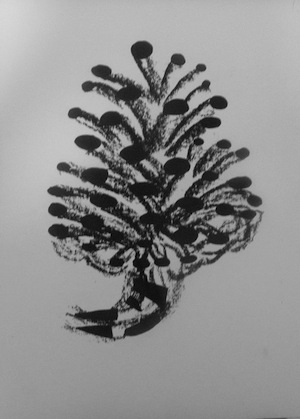

Out of all The projects I did my first semester in my sophomore year, this one is the one I took the most pride in . The pine cones are all the same but drawn in a different way. The order they are shown in is radical, simplified, nirvana, graphical and gesture. These were entirely hand drawn and done in acrylic, marker, ink and charcoal.